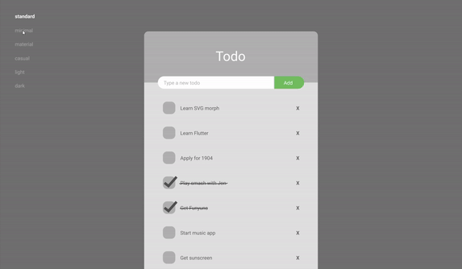
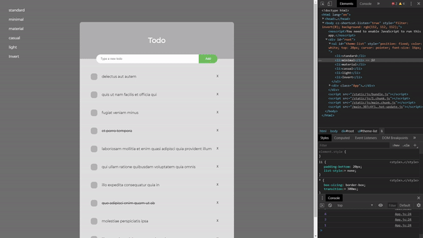

I began this project by using Figma to design a functioning prototype of the desired product. I found figma to be very similar to Adobe XD in most ways, but one thing I love about Figma in particular is it's accessibility as an online platform, as well as it's ease of use. Even though certain features like auto-animations aren't present in Figma, it's still a joy to use not only as a tool for UX, but even as an illustration and editing tool.
After creating a working prototype for the todo app, I began implementing the design with ReactJS. Even though I'm used to writing web apps in Vue, React was still funcitonally familiar and I was able to put together a working app with a placeholder-backend that loads random strings as todo-list items. These items can be deleted or added by the user, and the user also has the ability to change the theme of the UI using the left menu. Customizability is one of the most important parts of a user's experience so I hope to implement more features like this in future projects.
This project was a great way to dive into Figma and to brush up on JavaScript Frameworks. I plan to use Figma again in th near future to rehaul my JavaScript music app, and I also plan to use Figma for more mobile app mockups in the future.